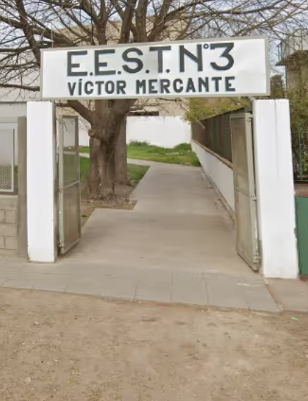
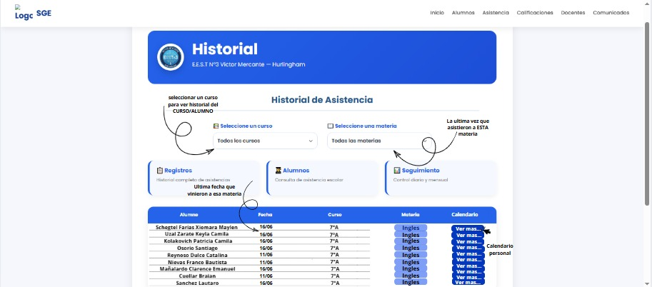

Una plataforma desarrollada por estudiantes de la E.E.S.T. N.º 3 Víctor Mercante para digitalizar el registro de asistencias y optimizar la organización institucional.

Escuela: E.E.S.T. N°3 Escuela Educativa Secundaria Técnica Víctor Mercante.
Somos un grupo de estudiantes de la E.E.S.T. N°3 Víctor Mercante que, a partir de una necesidad de nuestra institución, desarrollamos SOUK Gestión, una propuesta tecnológica destinada a mejorar la organización y el control de la asistencia escolar.
Nuestro proyecto busca aprovechar la tecnología para simplificar tareas administrativas, reducir el uso de registros en papel y facilitar el acceso a la información.
Reducir la carga de trabajo de preceptores y docentes.
Mejorar la organización de la información escolar.
Optimizar el tiempo en tareas administrativas.
Aportar una solución práctica a una necesidad real.

Buscamos modernizar y digitalizar la manera en la que se toma la asistencia de los jóvenes que concurren a nuestro establecimiento.
Con este nuevo sistema se podrá tener un orden y seguimiento de cada alumno de forma prolija, rápida y concreta.
La asistencia se carga de forma rápida y segura.
Permite consultar el estado de cada alumno.
Toda la información se encuentra ordenada y accesible.
Reduce errores en la carga y registro de datos.
Facilita el trabajo del personal educativo y administrativo.
Pasar del registro tradicional en papel a un sistema digital.
Reducir el tiempo dedicado a tareas administrativas.
Obtener porcentajes y reportes de forma automática.
Reducir errores en la carga y conservación de datos.
Facilitar el seguimiento de los alumnos y el acceso a la información.
El proyecto busca simplificar el seguimiento de la asistencia escolar, facilitar el acceso a la información y reducir el uso de registros en papel.
De esta manera, se busca que la gestión general del colegio sea más organizada y disminuir la pérdida de papeles importantes dentro de la escuela.
Al digitalizar la información, también se puede reducir el margen de error y facilitar el acceso a los datos cuando sean necesarios.
Una gestión escolar más organizada, accesible y eficiente, reduciendo la dependencia de los registros en papel.
A lo largo de este trabajo, pudimos poner en práctica los conocimientos adquiridos durante nuestra formación técnica, enfrentándonos a desafíos reales que requirieron análisis, planificación y dedicación.
Esta experiencia no solo fortaleció nuestras capacidades en el desarrollo de software, sino que también nos ayudó a mejorar la comunicación y la colaboración entre los integrantes del equipo.
Consideramos que el resultado obtenido cumple con los objetivos planteados inicialmente y aporta una herramienta útil para la comunidad educativa.
Además, su estructura ofrece la posibilidad de incorporar nuevas funciones y mejoras, permitiendo que continúe evolucionando según las necesidades que surjan con el tiempo.
Esta propuesta demuestra que la informática puede convertirse en un recurso fundamental para optimizar actividades diarias y contribuir al crecimiento de los espacios educativos mediante soluciones modernas y accesibles.